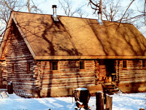
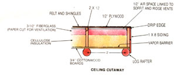
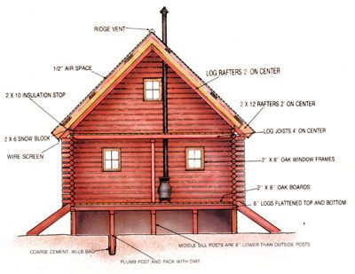
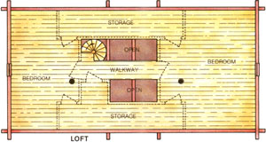
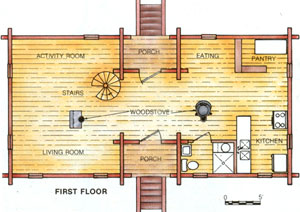
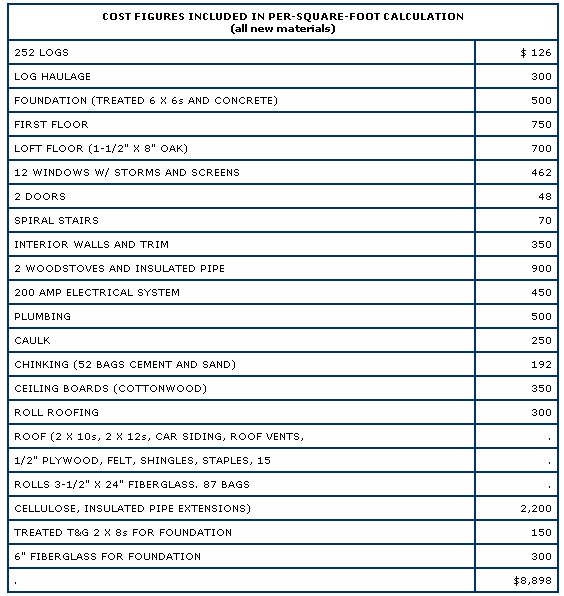

The Marquardts passed on a motgage and went to work with planning, convition and logs.
If there had been a prize category in our contest for best use of indigenous materials, the Marquardts' home in Mediapolis, Iowa, would have won hands down. Though four out of the five winners in the contest made use of trees on or near their own property, Wayne, Marcia, Jamey, Matt, and Sara Marquardt put 252 logs directly to work as the floor joists, exterior walls, loft joists, and rafters of their home. No milling was done, other than notching and flattening some sides with a chain saw and hand tools.
Half of the logs were earned in trade for clearing a farmer's land; the other half were purchased for a dollar apiece from a state forest where fire lanes were being cleared. Thus all the major structural elements of the 1,580-square-foot, two-story house cost only $126. In fact, getting the 18' to 24' logs to their building site cost more than twice as much as the materials themselves!
From their first inkling of a plan, the Marquardts intended to build their home without a mortgage. This, of course, required that they design and build the house themselves-despite having no previous construction experience-and that they keep very tight control of expenses. It helped them to admit at the beginning that they wouldn't be able to afford the time or money for everything they wanted; from that start, they focused their energy and funds on the necessities.
Using local logs for most of the structural elements saved thousands of dollars, and they shopped carefully for the store bought materials they needed. But the family took an even more fundamental approach to cost control. As they put their concepts to paper, they looked for building techniques that didn't require heavy equipment or expensive tools. Rather than succumb to the allure of gadgets, they bought only basic hand tools, the most expensive of which was a $400 chain saw that's still in use for cutting firewood. Because of their building's design-it has a post, rather than trench, foundation, for example-they had little need of heavy equipment, and when more sophisticated tools were needed, they borrowed or rented them.
One of the particularly fascinating things about the Marquardts' home is the way they mixed logs and conventional materials. The selection of one or the other for a particular job shows an understanding of both the relative durability of materials and reasonably simple construction practices.
The foundation, as we mentioned, consists of posts; they are spaced 5' on center along the 20' walls and 8' on center along the 40' sides. Each treated 6 X 6 was planted in concrete-made from one 80-pound bag of cement-that was poured into a hole extending below the frost line. Above the cement the posts were packed with dirt. Logs flattened on parallel sides form the sills that run around the building's perimeter. These timbers over- hang the posts by 1-1/2", so that the treated tongue-and-groove 2 X 8s used to close in the crawl space fit flush. Rather than insulate the floor, the Marquardts placed 6" fiberglass against the inside of the crawl space walls.
Main beams of logs with two parallel sides flattened run the 40' dimension, while floor joists span the 20' dimension on 4' centers and are notched into the sills. Exterior walls rise from the sills in conventional log-building fashion. (See our 19-page mini-manual, "Building the Traditional Hewn-Log Home," in issue 94 for a detailed explanation of log construction.) The corners are dovetail-notched together, and the tapers of logs on alternating courses are run in oppo site directions to keep the walls level. Everyone pitched in to lift logs onto the wall-with the aid of a huge log tripod equipped with block and tackle that straddled each wall. From the posts to the peak, all logs are tied together where appropriate with ring-shank nails and lag screws.
The loft floor was built in much the same way as the main one, but there's only a single main beam running the 40' direction. Joists are, again, notched into the sills and run 4' on center. Only the tops of the loft joists are flattened, however, and the oak flooring for the loft serves as the ceiling for the first floor.
Sills made from logs flattened on three sides-with the rounded side in-sit on top of the loft flooring. In turn, log rafters on 2' centers have 3" bird's-mouths that allow them to rest on the square outside corners of the sills. To seal between the rafters, 2 X 6s were mitered on top (to match the 45-degree roof angle) and notched into the rafters. On top of this sturdy arrangement rests an insulated, vented roofing system that's rated better than R-40 (see ceiling cutaway).
Windows and doors often make up one of the single largest expenses in home construction, but the Marquardts headed off this budget bleeder by building their own. To simplify fabrication, all 12 windows-with 24 sashes, counting the identical storm windowsare the same size. The inside sashes are hinged on one side and open in, while the storms are placed from the outside and are latched for the winter. Come spring, the storms are removed and replaced with screens. The two exterior doors are built up with oak frames and roughcut fir diagonals on a 1/2" plywood foundation.
The Marquardts even managed to use a log in their spiral stairway. They took a 6" diameter pole, cut it into 6" lengths, and drilled a 3/4" hole through the center of each round. These spacers and 2 X 12 X 2' 6" treads were slipped onto a 12'-long, 3/4" steel rod. Lengths of 1" dowel support the perimeter by spanning from the back of one tread to the front of the next one up.
Fourteen months after setting the first batter board in June of 1980, Wayne, Marcia, Jamey, Matt, and Sara moved in. As is the case for many owner-builders, though, moving in didn't mean the work was over; finishing up took most of another year.
The payoff for the Marquardts' restraint and diligence is an attractive, comfortable, energy-efficient home that cost them only $8,900 out of pocket. That's $5.63 per square foot for all new materials. Instead of being the token of a $50,000 mortgage (that might cost them $135,000 over the years), their home is completely bought and paid for. And instead of paying hundreds per month for heat, they cut wood from their own land to feed their two woodstoves. Their annual heating and cooling bill is about $200, including $40 for chain-saw maintenance. What's more, by the time you read this, they will have submitted the final payment on their 20 wooded acres, thereby retiring the six-year land contract they took in 1980 at 10% interest.
So not only do the Marquardts have a beautiful and energy-efficient home, their average monthly housing expenses now run $16.67!
EDITOR'S NOTE: If you'd like more details on the construction methods used in the Marquardts' log house (the first contest winner was described in MOTHER N0. 98), you can get their illustrated pamphlet by sending $5.00 to Box 242, Mediapolis, IA 52637.
|
 |
 |
 |
|
 |
 |
 |